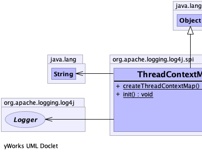
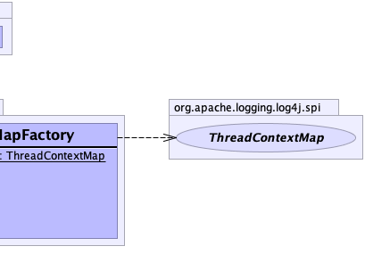

public final class ThreadContextMapFactory
extends java.lang.Object
If Log4j can use ThreadLocals, a garbage-free StringMap-based context map can
be installed by setting system property log4j2.garbagefree.threadContextMap to true.
Furthermore, any custom ThreadContextMap can be installed by setting system property
log4j2.threadContextMap to the fully qualified class name of the class implementing the
ThreadContextMap interface. (Also implement the ReadOnlyThreadContextMap interface if your custom
ThreadContextMap implementation should be accessible to applications via the
ThreadContext.getThreadContextMap() method.)
Instead of system properties, the above can also be specified in a properties file named
log4j2.component.properties in the classpath.
ThreadContextMap,
ReadOnlyThreadContextMap,
ThreadContext|  |  |
| Modifier and Type | Method and Description |
|---|---|
static ThreadContextMap |
createThreadContextMap() |
static void |
init()
Initializes static variables based on system properties.
|
public static void init()
public static ThreadContextMap createThreadContextMap()